练习④ 受注で構成し、製造・出荷・請求まで通す
.png 放进 assets/gui/ 后执行 python3 tools/swap_gui_images.py <site> --apply 即可一键替换。VA01）で構成値を入力 → 受注 BOM の構成品目と変種価格を確認 → MD04/MRP → 製造指図（CO40・CO03）へ設定値が伝搬することを確認 → 部品出庫（261）・実績（CO11N）・完成入庫（101）→ 出荷（VL01N/VL02N・601）→ 請求（VF01・変種価格込み）→ 伝票フローが閉じるまで。预计 80 分钟。本练习之后系统里的状态是：受注 10 台の構成値が受注 BOM・所要量・指図・請求まで一気通貫で追える（＝ VC が「業務で使える」状態）。
10 台＋構成
受注 BOM
VA00 加算
KEK・E
設定値伝搬
601
伝票フロー
4-1 受注登録と構成入力（VA01）
入力值
| 項目 | 值 | 説明 |
|---|---|---|
| 販売伝票タイプ | OR | 標準受注 |
| 販売組織 / チャネル / 部門 | 1000 / 10 / 00 | 販売エリア |
| 得意先（受注先・出荷先） | 1000 | 出荷先未指定なら受注先と同じ |
| 購買発注番号（得意先参照） | PO-VC-0001 | 客先注文番号（追跡用） |
| 受注日 / 希望納期 | 今日 / 今日 ＋ 45 日 | ポンプは納期に余裕を持たせる想定 |
| 明細 10：品目 / 数量 / プラント | ZVC-PUMP01 / 10 PC / 1000 | 設定可能品目 |
| 構成（設定値） | 容量 80 / 材質 SUS316 / 塗装 EPOXY / 付属品 PG_FG | 明細の「構成」から設定画面を開いて入力 |
明細 10：単価（PR00） | 850,000 JPY（自動決定） | 条件レコードから自動で決定される |
VA01→OR→ 販売エリア・得意先・納期を入力 → 明細にZVC-PUMP01／10PC／プラント1000を入力。- 明細を選択した状態で「構成（Configuration）」ボタンを押す → 設定画面が開く（開かない場合は C3 の 5 条件へ戻る）。
- 容量
80/ 材質SUS316/ 塗装EPOXY/ 付属品PG_FGを選択。前提条件・手続きが発火するので、選べない値・自動で変わる値を観察する（练习③の成果が出る場面）。 - 構成結果（BOM 展開）を確認してから構成を確定（戻る）。明細の構成品目（受注 BOM）ボタンで構成品目を確認。
- 納入日程行（希望納期）を確認 → 保存 → 受注番号を記録（ワークシート シート B）。
TAN 系という記載もあるが環境差あり → C10）。
② 明細の「構成品目」に、選んだ構成に対応する部品（ケーシング SUS316・羽根車・軸・モータ・圧力計・流量計）が並ぶ。
③ VA03 → 明細 → 「構成」で設定値が保存されている（受注の構成は業務データとして保存される。CU50 のシミュレーションとはここが違う）。CU50 では出るのに受注で出ない場合は プロファイルの処理形式を最優先で疑う。
③ 前提条件で値が選べず「入力が進まない」→ 练习③ の依存関係が設計どおりに効いている証拠。選べる組合せに変更して進める。
④ 構成を確定せずに保存→ 「構成が不完全」エラー（必須特徴を入れ忘れ）。CU50 の構成」と「受注の構成」の違いを表にせよ（保存先・後工程への影響・所要量/在庫への波及の 3 点）。2-3 で書いた予想と答え合わせをすること。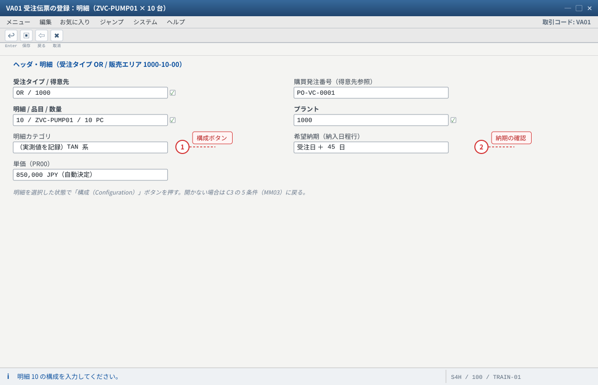
- 1 構成ボタンが出ない／グレー＝品目が設定可能でない・プロファイル未割当・明細カテゴリが構成不可
- 2 希望納期は納入日程行。在庫ゼロでも希望のままなら MTO の正常動作
自システムでの確認：明細の明細カテゴリ（実測値を記録。TAN 系という記載もあるが環境差あり）と、構成ボタンの有無。
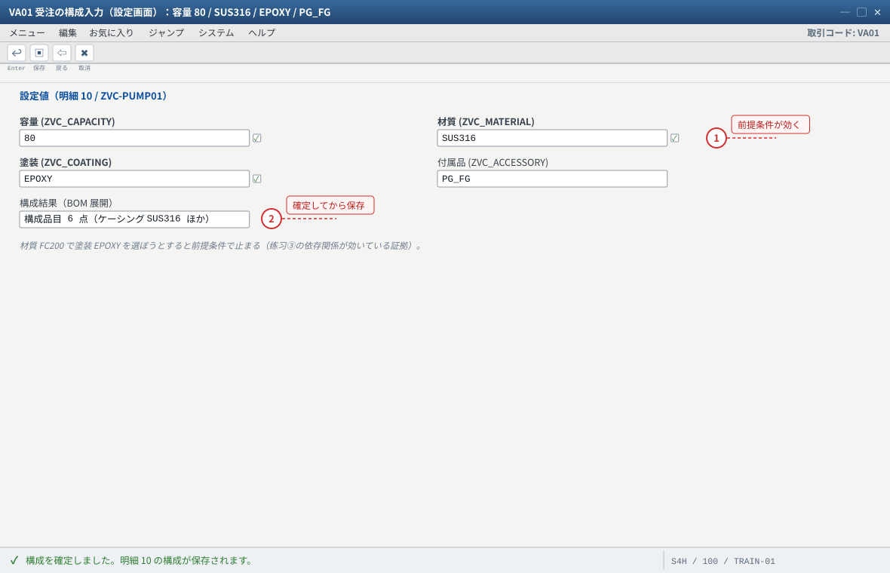
- 1 前提条件で選べない値があること自体が設計どおり（止まるときは組合せを変更する）
- 2 構成を確定せずに保存すると「構成が不完全」エラーになる
自システムでの確認：VA03 → 明細 → 「構成」で設定値が保存されているか（受注の構成は業務データとして保存される）。
4-2 変種価格の確認（条件画面）
VA03→ 受注番号 → 明細 → 「条件」ボタン → 条件画面を開く。PR00（基本価格 850,000）の行を確認。VA00（変種条件）の行を確認し、金額と決定された条件レコードのキーを見る（材質SUS316などがキーになっている）。- 合計金額が「基本価格 × 10 台 ＋ 加算 × 10 台」になっているか電卓で確認する（差異があれば設計ミス）。
PR00 と VA00 の両方が出る。② キーに設定値（特徴値）が入っている。
③ 加算が出ない場合は C13 の 4 点セット（追加データ／条件タイプ／計算手続／条件レコード）を順に確認。「出ない」の切り分けはこの順序が最短です。VA00 の行はあるが金額 0 → 条件レコードのキー不一致（VK13 で確認。VKOND に値が飛んでいない＝特徴の追加データ未設定）。
② 条件画面自体に VA00 が出ない → 計算手続（V/08）に VA00 のステップが無い／有効期間外。
③ 受注後に条件が変わった（VK12 で更新）→ 既存受注は再価格決定しない限り古い金額のまま。これは「故障」ではなく仕様。業務ルールを決める（→ 练习⑤ の変更統制）。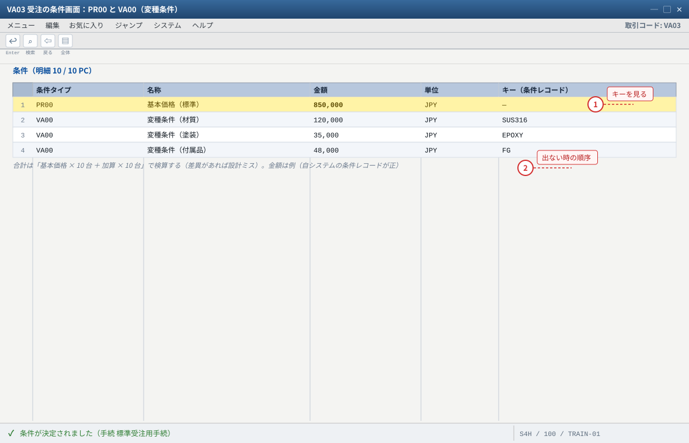
- 1 キーに設定値（特徴値）が入っている＝特徴の追加データが効いている
- 2 VA00 の行が出ない → 計算手続（V/08）→ 追加データ（CT04）→ 条件レコード（VK13）の順で疑う
自システムでの確認：VK13 の条件レコード一覧（キーの値と金額）と VA03 の条件画面（VA00 の行と決定キー）。金額は例。
4-3 所要量と MRP（MD04 / MD01N）
MD04→ 品目ZVC-PUMP01／プラント1000→ 受注明細の「得意先所要量」行が出ること（受注番号・明細番号つき）を確認。- MRP を実行（
MD01N（MRP Live：品目/プラント指定）またはMD02）。 - MD04 を再表示 → 計画手配が生成され、その在庫区分が受注在庫（特別在庫 E）になっていることを確認（戦略
25→ 所要量タイプKEK→ 所要量クラス046系）。 MMBE→ 品目ZVC-PUMP01：受注在庫（特別在庫 E）の行が出ること（数量はまだ 0）。- 構成品目（部品）側の所要量が MD04 に出るかも確認（BOM が展開されて部品需要が発生しているか）。
MMBE に受注在庫 E の行。
④ 部品（ケーシングなど）の所要量が発生している（BOM が効いている証拠）。MD04 の画面をそのまま読めるようになること：「得意先所要量」「計画手配」「在庫区分」の 3 語の意味を、この受注の数字で説明せよ。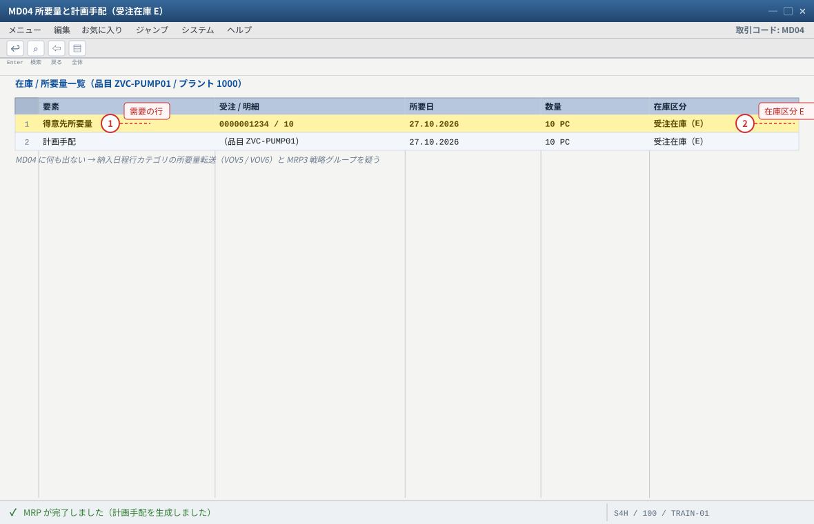
- 1 「得意先所要量」＝受注明細が需要として流れている証拠
- 2 計画手配の在庫区分が E でない → MRP4 個別所要量と所要量クラスの在庫区分（C11）
自システムでの確認：MD04 の「得意先所要量」行に受注番号、計画手配の在庫区分＝受注在庫、MMBE に受注在庫 E の行。MRP 実行は MD01N（MRP Live）または MD02。
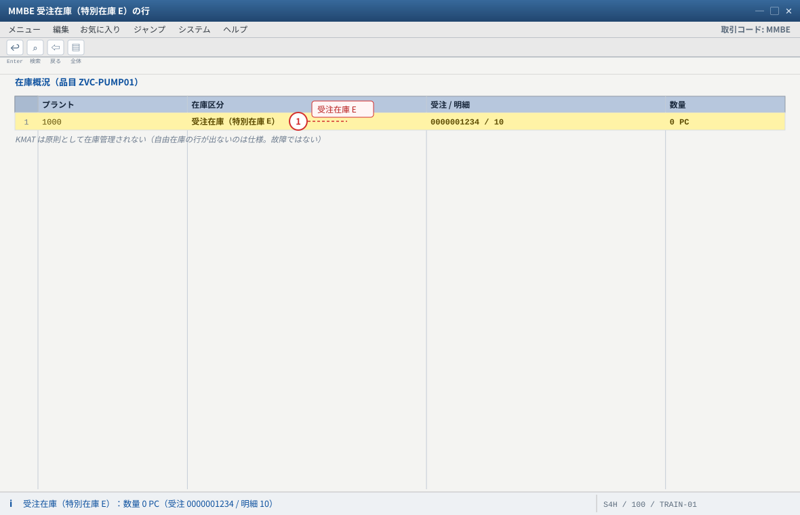
- 1 受注在庫の行が出ること＝戦略 25 / 所要量クラス 046 系の挙動
自システムでの確認：MMBE の在庫区分の行。MB52 でも同じ行が見える。構成品目側の所要量が MD04 に出ているかも確認（BOM が効いている証拠）。
4-4 製造指図への設定値伝搬（CO40 / CO08 / CO03）
- MD04 の計画手配から製造指図を作成（計画手配を選択 → 「変換」。または
CO40（受注明細を参照して指図作成）／CO08）。 CO03→ 指図番号 → 「構成」ボタン → 受注で選んだ設定値（80/SUS316/EPOXY/PG_FG）が表示されることを確認。ここが本练习の核心。- 構成品目（部品一覧）が受注 BOM と同じ構成になっているか確認（ケーシング
SUS316のみ、圧力計・流量計あり）。 - 工程一覧を確認 → 塗装工程が採用されている（塗装
EPOXYのため）。 - 指図を指図リリース（
CO02→ リリース、またはCO05N一括リリース）。リリースしないと入出庫・実績ができません。
CO03 の「構成」に設定値。② 構成品目が受注 BOM と一致。③ 工程の取捨が効いている。④ 指図のヘッダに受注明細への参照（販売伝票・明細）がある。
VC の故障はほとんど「受注では正しいのに指図が違う」の形で現れるので、この 4 点が確認の型になります。CO01 で品目だけ入れて作ると構成が引き継がれない）。CO40/CO08 や計画手配から変換して作る。
② 指図作成後に設定値を変えた → 指図側は古い構成のまま（再展開が必要）。これが「現場が壊れる」典型（→ 练习⑤ 変更統制）。
③ 工程が出ない／違う → 作業手順の選択条件と有効日。
④ 指図リリース前に入出庫しようとしてエラー → リリース手順を飛ばしている。SUS316 → SUS304 に変更し、指図が自動で変わらないことを確認せよ。その上で「どう運用すべきか」を 2 案（再展開する／変更禁止にする）書く。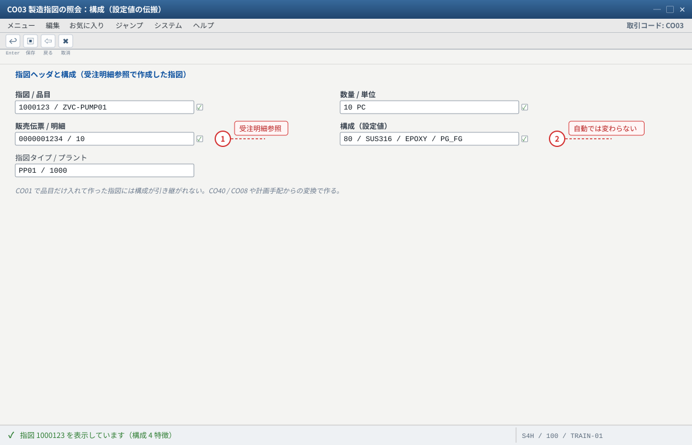
- 1 ヘッダの受注明細参照が無い＝構成が引き継がれない第一嫌疑
- 2 指図作成後に受注の構成を変えても指図は自動で変わらない（再展開が必要。练习⑤）
自システムでの確認：CO03 の「構成」ボタンで設定値、指図ヘッダの受注明細への参照（販売伝票・販売伝票明細）。
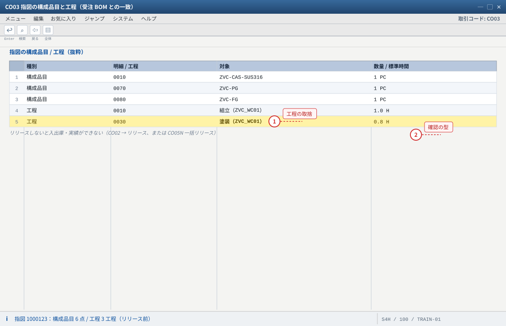
- 1 構成値が効いて工程の取捨も効いている（塗装 EPOXY なので 0030 が採用）
- 2 「受注では正しいのに指図が違う」＝ VC の故障の典型パターン。この画面の 4 点で確認する
自システムでの確認：CO03 → 構成品目（部品一覧）が受注 BOM と同じか、工程一覧で塗装工程が採用されているか、指図がリリース済みか（CO02 でリリース）。
4-5 部品出庫・製造実績・完成入庫（261 / CO11N / 101）
- 部品出庫（261）：
MIGO→ 移動タイプ261→ 指図番号 → 構成品目（ZVC-CAS-SUS316など）を出庫。受注 BOM に無い部品は出庫できないことを知る（＝選択条件が効いている証拠）。 - 製造実績：
CO11N→ 指図番号・工程・歩留数量10を入力。バックフラッシュ設定なら部品が自動出庫される。 - 完成入庫（101）：
MIGO／MB31→ 移動タイプ101→ 指図番号 → 数量10。入庫先は受注在庫（E）。 MMBE→ 品目ZVC-PUMP01：受注在庫（E）10 PC（受注番号つき）になっていることを確認。CO03→ 指図の状態を確認（CNF＝確認済、または部分確認）。差異（実際原価と標準原価）も見ておく。
MMBE の受注在庫 E に 10 PC。② MB52 でも同じ行が見える。③ 部品の在庫が減っている（261／バックフラッシュ）。
④ 指図の状態が CNF 系。VC 固有の見どころは「選ばなかった部品は出庫できない」こと——構成エンジンが在庫の動きまで統制している証拠です。ZVC-CAS-FC）を 261 で出庫しようとすると何が起きるか」を実際に試し、この統制が業務上なぜ重要か（誤品出庫の防止）を 3 行で説明せよ。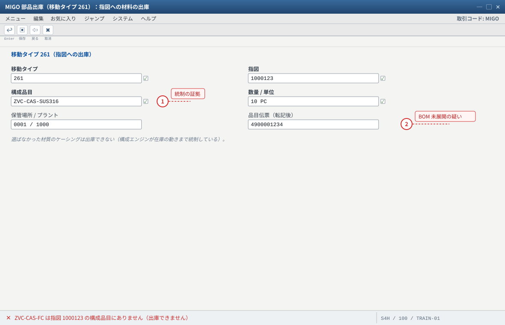
- 1 エラーになること自体が統制が効いている証拠（誤品出庫の防止）
- 2 「指図に部品がありません」→ 指図の BOM 未展開（プロファイル処理形式・有効日）
自システムでの確認：MIGO で 261 → 指図番号 → 構成品目を出庫。受注 BOM に無い部品（ZVC-CAS-FC）を入れるとエラーになることを確認。
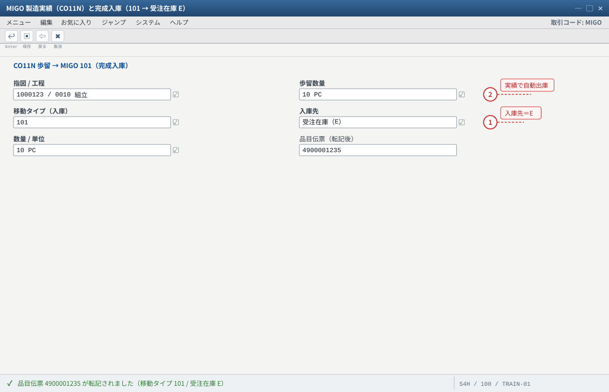
- 1 入庫先が自由在庫になる → MRP4 個別所要量／所要量クラスの在庫区分（受注在庫でない）
- 2 部品は 261 またはバックフラッシュで自動出庫される
自システムでの確認：MMBE の受注在庫（E）10 PC（受注番号つき）、MB52、部品在庫の減少（261 / バックフラッシュ）、CO03 の指図状態（CNF 系）。
4-6 出荷・出庫確認（VL01N / VL02N・601）
VL01N→ 出荷先1000／受注番号 → 出荷作成 → 明細の在庫区分が E（受注在庫）、引当数量10になっていることを確認。- ピッキング数量を入力（
VL02N）。 VL02N→ 出庫確認（PGI） → 移動タイプ601。受注在庫が 0 になること、会計伝票が生成されることを確認。MMBE→ 受注在庫 E が 0、自由在庫も増えていないことを確認（受注在庫は客先へ出た）。
MMBE（E = 0）。③ MB03 の品目伝票で 601 と会計伝票。
受注在庫が「受注の都合だけで動いている」ことが VC × MTO の本質です。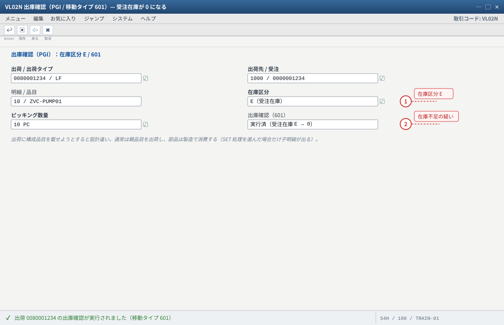
- 1 在庫区分 E からの出庫＝受注在庫が「受注の都合だけで動いている」ことが VC × MTO の本質
- 2 PGI で「在庫が不足」→ 101 入庫の数量不一致を確認
自システムでの確認：出荷明細の在庫区分 E と受注番号、PGI 後の MMBE（E = 0）、MB03 の品目伝票で 601 と会計伝票。
4-7 請求と伝票フロー（VF01）
VF01→ 出荷番号（またはVF04の請求一覧）→ 請求 → 明細の条件にPR00とVA00の加算が乗っていることを確認。- 保存 → 請求書番号を記録。金額を電卓で検算（10 台分）。
VA03→ 受注番号 → 「伝票フロー」→ 受注 → 出荷 → 請求 → 会計伝票 がすべて閉じていることを確認。FB03で請求の会計伝票（売掛金・売上）と、入出庫の在庫勘定を 1 件ずつ確認（発展）。
VA00 の加算行がある（変種価格が出荷・請求まで運ばれた）。
② 伝票フローが 受注 → 出荷 → 請求 → 会計 で完結。これが「VC の受注生産を 1 周した」という最終証拠です。VA00 が乗らない → 条件のコピー制御（出荷 → 請求）か条件レコードの有効期間。
② 金額が受注時と違う → 条件レコードが受注後に変更された（再価格決定の有無）。
③ 伝票フローが途中で止まる → 前工程の未完（PGI 済みか、請求対象か）。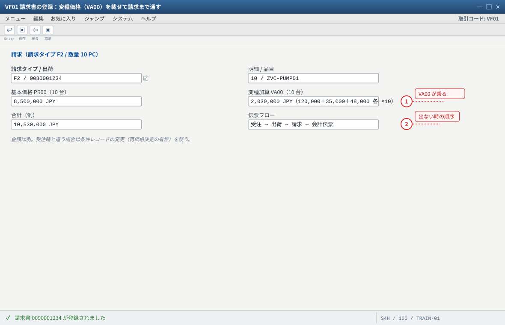
- 1 VA00 の加算が請求まで運ばれる（変種価格の最終証拠）
- 2 加算が無い → VTFL（出荷 → 請求のコピー制御）か条件レコードの有効期間
自システムでの確認：VF03 の条件タブ（VA00 行）、伝票フロー（履歴）、FB03 の会計伝票（売掛金・売上）。
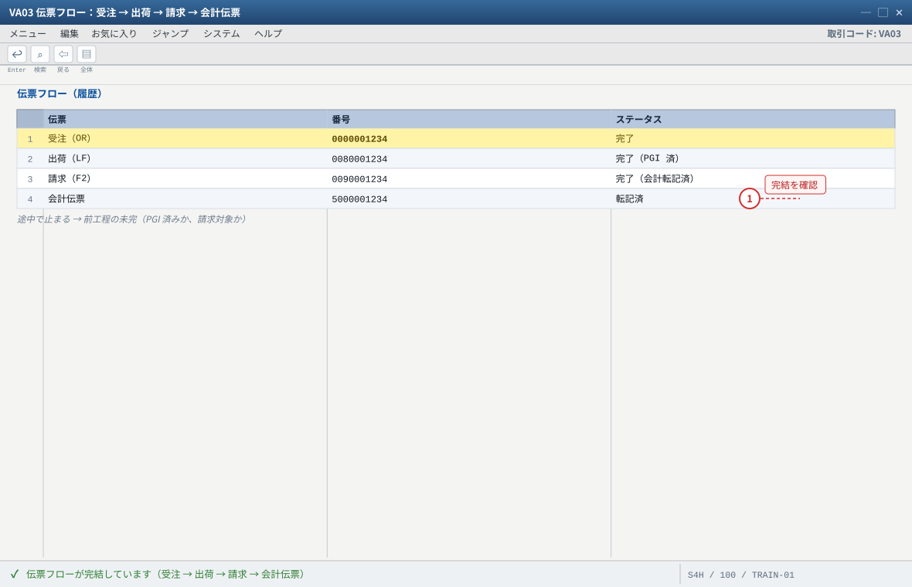
- 1 チェーンが閉じている＝VC の受注生産を 1 周した証拠
自システムでの確認：VA03 → 伝票フロー（履歴）で各伝票のステータス、FB03 で請求の会計伝票と入出庫の在庫勘定を 1 件ずつ。
4-8 本练习的期待结果汇总
| # | 工程 | 期待值 | 証跡 |
|---|---|---|---|
| 1 | 受注（VA01） | ZVC-PUMP01 × 10 / 構成 80・SUS316・EPOXY・PG_FG / 受注番号取得 | VA03 明細＋構成 |
| 2 | 受注 BOM | ケーシング SUS316・羽根車・軸・モータ・圧力計・流量計 | VA03 → 明細 → 構成品目 |
| 3 | 変種価格 | VA00 の加算行と条件レコードのキー | VA03 条件画面／VK13 |
| 4 | 所要量 | MD04 の得意先所要量＝10、計画手配の在庫区分 E | MD04 |
| 5 | 指図 | 構成に設定値、構成品目・工程が受注 BOM と一致、リリース済 | CO03 |
| 6 | 入出庫 | 261 で部品出庫 → CO11N 歩留 10 → 101 で受注在庫 E に 10 PC | MB03／MMBE |
| 7 | 出荷 | 在庫区分 E・引当 10・601 で E = 0 | VL01N/VL02N／MMBE |
| 8 | 請求 | PR00＋VA00 の金額、伝票フロー完結 | VF03／VA03 伝票フロー |
4-9 つまずきと対処（まとめ）
| 症状 | 原因の第一嫌疑 | 确认手顺 |
|---|---|---|
| 受注で構成できない | 5 条件／プロファイル／明細カテゴリ | MM03 → CU43 → VOV4 |
| 受注 BOM が出ない | プロファイルの処理形式／BOM 有効日／選択条件 | CU43 → CS03 → CU03（CU50 で再現できるか先に見る） |
| 指図に設定値が来ない | 指図の作り方（受注明細参照でない） | CO03 の構成 → 指図ヘッダの受注明細参照 |
| 加算が出ない | 追加データ／条件タイプ／手続／条件レコード | VA03 条件 → V/06 → V/08 → VK13 → CT04 追加データ |
| 所要量が出ない | 納入日程行カテゴリの所要量転送／戦略グループ | VA03 納入日程行 → VOV5/VOV6 → MM03 MRP3 |
| 受注在庫に入らない（自由在庫） | MRP4 個別所要量／所要量クラスの在庫区分 | MM03 MRP4 → OVZG |
| 出荷できない | 入庫未完了／在庫区分が E でない | MMBE → MB03（101 の有無） |
4-10 验收（完成基准）
- 受注
ZVC-PUMP01× 10 台が登録され、構成値（80/SUS316/EPOXY/PG_FG）が保存されている - 受注明細の「構成品目（受注 BOM）」が構成どおり（ケーシング
SUS316のみ・圧力計/流量計あり） - 条件画面に
VA00の加算行があり、キーに設定値が入っている MD04に得意先所要量が出て、計画手配の在庫区分が受注在庫（E）になっているMMBEで受注在庫（E）の行を提示できる- 製造指図の「構成」に設定値が伝搬し、構成品目・工程が受注 BOM と一致している
- 261 で部品出庫 →
CO11Nで歩留 10 → 101 で受注在庫 E に 10 PC 入庫した VL01Nで在庫区分 E・引当 10、VL02Nの 601 で受注在庫が 0 になったVF01の請求にPR00＋VA00の金額が乗り、伝票フローが受注→出荷→請求→会計で完結している- 受注番号・指図番号・出荷番号・請求番号を シート B に記録した
82・変更統制）と故障対応（守りと一歩先の設計に進みます）